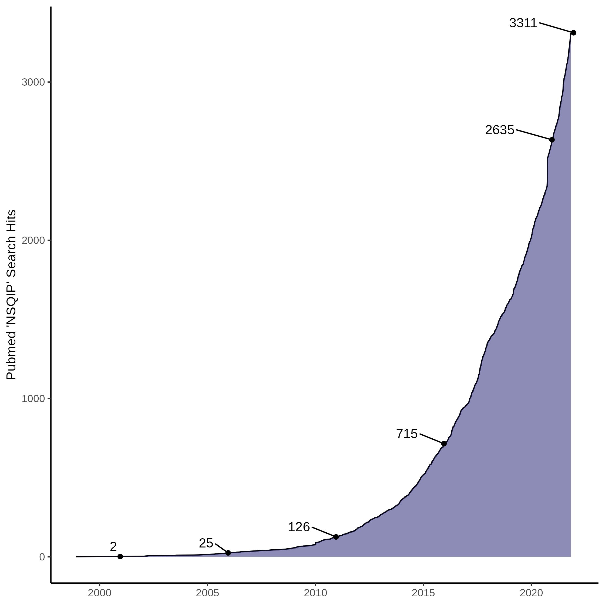
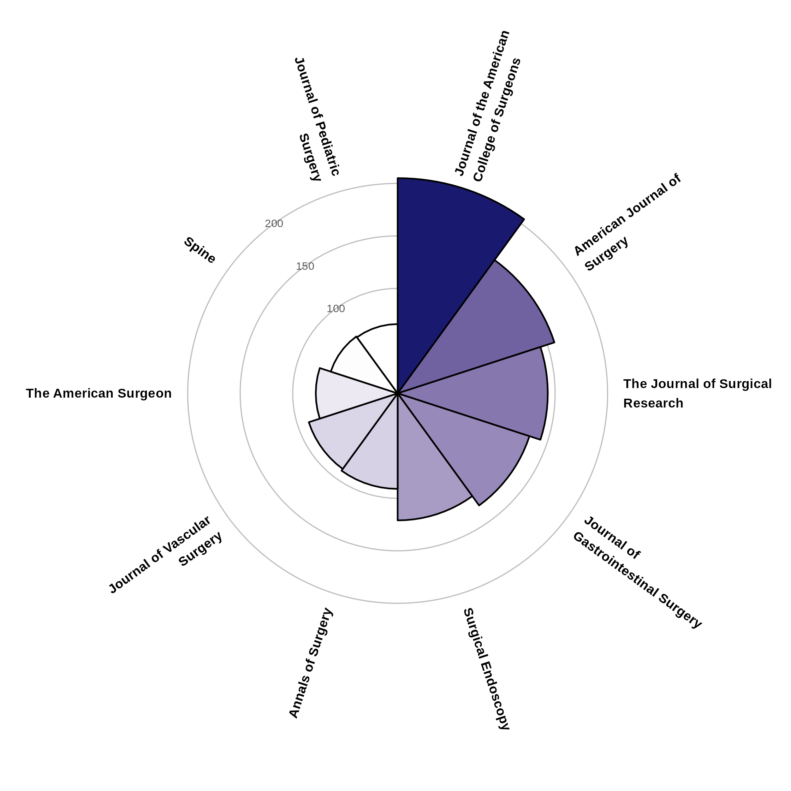

What would you like to see implemented in nsqipr? Open an issue! Are you interested in using or helping develop nsqipr? Send me an email!
See the companion book for a more detailed guide!
About ACS NSQIP©
Welcome to nsqipr! If you’re reading this, you are likely already familiar with the American College of Surgeons National Surgical Quality Improvement Program (ACS NSQIP©). If not, you can read about it here. The ACS NSQIP © is a nationally validated, risk-adjusted, outcomes-based program to measure and improve the quality of surgical care.
As of 30 October, 2021, there are currently 699 hospitals that participate in and contribute to the program. The entire database contains more than 8 million cases for data analysis.
Inclusion and Exclusion Criteria
ACS NSQIP© captures and reports 30-day morbidity and mortality outcomes for all major inpatient and outpatient surgical procedures as determined by Current Procedural Terminology (CPT©) code. This list is updated annually as new codes become available. Excluded cases are:
- Patients under the age of 18 years.
- >3 inguinal herniorrhaphies in an 8-day period.
- >3 breast lumpectomies in an 8-day period.
- >3 laparoscopic cholecystectomies in an 8-day period.
- >3 TURPs and/or TURBTs in an 8-day period.
Publications
The data from ACS NSQIP© is used to produce an exponentially increasing number of publications per year. As of 30 October, 2021, there are currently 3311 PubMed search results for the search term “NSQIP”.

These papers are often published in high quality journals. The following graph shows the top 10 most common journals in which the above search results were published.

About nsqipr
Purpose
ACS NSQIP© requires that members request specific datasets for use in research. The files are then delivered as .exe executable files available for download for a limited duration of time. The archived files can be unzipped and contain a .txt tab-delimited file. Some will also contain a PDF version of the Participant Use File (PUF); these define the variables in the dataset. The .txt tab-delimited file must be read into R as a data frame and meticulously cleaned prior to being used for data analysis. Researchers often want to combine data across multiple years. This complicates data preparation as variables are removed or added every year and sometimes the same variable may have differently worded outcomes between years.
|
race (2005-2006) |
race_new (2019) |
|---|---|
|
American Indian or Alaska Native |
American Indian or Alaska Native |
|
Asian or Pacific Islander |
Asian |
|
Black, Not of Hispanic Origin |
Black or African American |
|
Hispanic, Black |
Native Hawaiian or Pacific Islander |
|
Hispanic, Color Unknown |
Unknown/Not Reported |
|
Hispanic, White |
White |
|
Unknown |
|
|
White, Not of Hispanic Origin |
The purpose of nsqipr is to streamline this process. This package is geared towards those surgical interns, residents, and attendings who have limited experience with R, SQL, or “big data” analysis. It is also designed to be a useful tool for that experienced researcher or computer scientist making frequent use of ACS NSQIP© PUFs.
For a detailed dive into nsqipr, please refer to the companion book or the documentation:
help("nsqipr")Installation
You can install or upgrade nsqipr with:
devtools::install_github("dylanrussellmd/nsqipr")We are not (yet) available on CRAN.
Use
- Execute all
.exeexecutable files from ACS NSQIP© in a single directory (dir) (do not change the default file names). - Now simply run
nsqip(dir).
nsqipr will take care of the rest. You’re now ready to use the ACS NSQIP© data for data analysis!
Progress
Track progress on how the various data sets are being incorporated into nsqipr here.
- Main PUF - Done, Documented, Tested
- Vascular - In progress, use with caution
- Abdominal Aortic Aneurysm - In progress, use with caution
- Aortoiliac Endovascular - In progress, use with caution
- Aortoiliac Open - In progress, use with caution
- Carotid Artery Stenting - Not started
- Carotid Endarterectomy - Not started
- Endovascular Aneurysm Repair - Not started
- Lower Extremity Endovascular - Not started
- Lower Extremity Open - Not started
- Colectomy - In progress, use with caution
- Pancreatectomy - In progress, use with caution
- Proctectomy - Not started
- Hepatectomy - In progress, use with caution
- Thyroidectomy - Not started
- Esophagectomy - Not started
- Appendectomy - In progress, use with caution
- Gynecology - Not started
- Hysterectomy - Not started
- Hip Fracture - Not started
- Cystectomy - Not started
- Nephrectomy - Not started
- Prostatectomy - Not started
Check back often for updates!